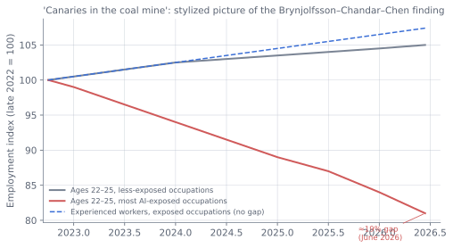

Economics: Productivity, Labor, Growth, and Who Captures the Gains¶
In brief
- Task-level productivity gains are large (15–55%); firm-level gains are smaller and uneven; aggregate TFP has not yet broken trend—the standard general-purpose-technology lag.
- Labor effects so far run through hiring, not layoffs: employment of 22–25-year-olds in AI-exposed occupations is ~19% below trend; headline unemployment is 4.1%.
- Author's estimate: +0.5–1.5 pp/year US productivity growth through the early 2030s; ~15% chance of >10% AI-driven unemployment by 2032.
- Distribution, not aggregate output, is the central economic question; current trajectories point toward concentration absent policy.
The questions¶
The economics of AI reduce to four questions, in rising order of difficulty. Does AI make workers and firms more productive, and by how much? What happens to employment and wages as it does? Does it change the long-run growth rate of the economy, or only its level? And who captures the gains—capital or labor, incumbents or entrants, rich countries or poor ones, this generation or the next?
The evidence as of 2026 is unusually rich at the micro level and unusually contested at the macro level. This chapter proceeds from what is best measured (task-level productivity) to what is most speculative (growth regimes under transformative AI), attempting to keep the two clearly separated. The overall conclusion: the productivity effects are real and large at the task level, modest so far at the aggregate level for the usual general-purpose-technology reasons, and heading toward a decade in which the central economic question shifts from "does it work?" to "who benefits?"
Task-level productivity: what the experiments show¶
The randomized and quasi-experimental literature is now large. Representative results:
| Study | Setting | Effect |
|---|---|---|
| Brynjolfsson, Li, Raymond (2023; QJE 2025) | 5,000+ customer-support agents, gen-AI assistant | +14% issues resolved per hour on average; +34% for least experienced; small for most experienced; improved customer sentiment, reduced attrition |
| Noy & Zhang (2023, Science) | Professional writing tasks | Time −40%; quality +18%; largest gains for weaker writers |
| Peng et al. (2023) | Developers with Copilot | Task completion 56% faster |
| Cui et al. (2024) | 4,800 developers at Microsoft, Accenture, Fortune 100 | +26% completed tasks; larger for junior developers |
| Dell'Acqua et al. (2023, "Jagged Frontier") | 758 BCG consultants | +40% quality on tasks inside the frontier; −19 pp correctness on a task outside it |
| METR RCT (2025) | 16 experienced open-source developers, own repos | −19% (slower) with early-2025 tools, while believing +20% faster |
| Otis et al. (2024) | Kenyan small businesses with AI advisor | High performers +15% profit; low performers −8% |
| Humlum & Vestergaard (2025) | 25,000 Danish workers, 11 occupations | Time savings ~2.8% of hours; no detectable earnings or hours effects |
| Federal Reserve surveys (2025–26) | US workers | Users save ~5% of work hours; ~1–2 hours/week |
Several patterns emerge. Gains are large on well-defined tasks inside the model's competence and can be negative outside it. Gains are largest for less experienced workers, compressing the skill distribution within occupations (the "leveling" effect)—except in contexts where the task requires knowing when to distrust the model, where expertise matters more. Self-reported gains exceed measured gains. Effects on individual tasks (15–55%) exceed effects on jobs (a few percent of hours), because jobs bundle many tasks, most of which AI does not yet do, and because saved time is not automatically redeployed to valuable work.
The 2025 METR result deserves emphasis because it cut against the narrative: experienced developers working on codebases they knew deeply were slowed by AI tools, spending time prompting, reviewing, and correcting. Later studies with 2026 agents found the effect reversed for most task types, but the finding stands as evidence that productivity effects depend heavily on context, tool maturity, and worker expertise—and that perception is a poor guide.
Firm and aggregate productivity: the diffusion lag¶
What firms report¶
Surveys (McKinsey, BCG, Bain, the Census Bureau's Business Trends and Outlook Survey) show high adoption in name—70–80% of large firms use generative AI somewhere—and shallow adoption in substance. The Census Bureau's survey found the share of US firms using AI in production rising from about 4% in 2023 to roughly 10–15% by 2026, with much higher shares in information, professional services, and finance and low shares in construction, agriculture, and accommodation. MIT's NANDA report (August 2025) found that about 95% of enterprise generative-AI pilots produced no measurable profit-and-loss impact—a widely cited figure that reflects both the immaturity of deployments and the difficulty of measurement. Firms that report material EBIT impact (perhaps 10–25% of large firms) are concentrated in software, marketing, customer operations, and financial services.
The reasons for the gap between task-level gains and firm-level results are the standard ones for general-purpose technologies (Brynjolfsson, Rock, and Syverson's "productivity J-curve"): complementary investments in data, process redesign, training, and organizational change take years; early adoption costs are expensed while benefits accrue later; and measured output understates gains in quality and variety. Electricity took forty years from Edison's first power station to visible productivity effects, because factories had to be redesigned around distributed motors rather than a central shaft. Computers produced Robert Solow's 1987 paradox ("you can see the computer age everywhere but in the productivity statistics") for a decade before the late-1990s acceleration.
What the aggregate statistics show¶
US labor productivity growth averaged about 2% a year in 2023–2025 after a weak decade, with some economists attributing a portion to AI and others to post-pandemic reallocation and investment. Total factor productivity growth has not yet shown a clear break. AI-related capital expenditure has been a major contributor to GDP growth through the investment channel (Chapter 3), but that is spending, not productivity. Goldman Sachs' April 2026 tracker put US worker AI adoption at about 20% and estimated that academic studies imply roughly a 23% average labor productivity boost for adopting tasks—consistent with meaningful but not yet macro-visible effects.
Forecasts of the productivity effect¶
The range of published estimates is wide and turns on assumptions about how many tasks are automatable, how fast adoption proceeds, and whether AI accelerates innovation itself:
| Source | Estimate |
|---|---|
| Acemoglu (2024) | +0.07 pp/year TFP; ~0.5–1% GDP level over a decade ("nontrivial but modest") |
| Wharton Budget Model (2025) | +1.5% GDP level by 2035; +3.7% by 2075 |
| Goldman Sachs (2023–26) | +1.5 pp/year US productivity growth over a decade at full adoption; +7% global GDP over 10 years |
| OECD (Filippucci et al., 2025) | +0.4–1.3 pp/year labor productivity over 10 years in high-exposure economies |
| Aghion & Bunel (2024) | +0.5–1.3 pp/year TFP, transitory unless AI automates idea production |
| McKinsey (2023) | $2.6–4.4 trillion annual value from gen-AI; +0.1–0.6 pp/year productivity |
| IMF (2024–26) | 40% of jobs affected globally, 60% in advanced economies; +0.1–0.8 pp productivity depending on scenario |
| Anthropic Economic Index (2025–26) | Current usage patterns imply +1–1.8 pp/year labor productivity growth over a decade if adoption spreads |
| Karger et al. / FRI (2026) expert survey | Unconditional GDP growth ~2.5%/year to 2050 (vs 2.0% baseline); 3.3–5.3%/year under rapid-AI scenario |
| Erdil & Besiroglu (Epoch, 2024) | ~50% probability of "explosive growth" (>30%/year) by 2100 if AI can broadly substitute for labor |
The Forecasting Research Institute's 2026 survey (Karger, Tetlock, and colleagues; a Chicago Fed working paper) is the most careful attempt to structure this disagreement. It found that economists assign about 61% probability to "moderate or rapid" AI progress by 2030 yet forecast GDP growth only modestly above trend unconditionally—citing base rates, adoption lags, demographic headwinds, and infrastructure bottlenecks—while conditional on rapid progress they forecast 3.3–3.5% growth (AI-industry respondents: 5.3% by the 2040s). Strikingly, the survey found that disagreement is driven less by beliefs about how fast AI will advance than by beliefs about what capable AI does to the economy—a finding that suggests the economics, not the technology, is the crux.
The author's assessment¶
Task-level evidence and the diffusion literature support a productivity effect of roughly 0.5–1.5 percentage points per year added to US productivity growth through the early 2030s, back-loaded as agents mature and complementary investment matures—roughly the size of the late-1990s IT boom, and larger than Acemoglu's skeptical estimate because agents automate many more tasks than the 2023 chatbots his calculation assumed. Beyond 2032 the range widens enormously: if AI accelerates R&D and if robotics matures, growth rates well above historical norms become possible; if agents plateau in reliability, the effect looks like a large one-time level shift.
Labor markets¶
What has happened so far¶
The evidence through mid-2026 is best captured by the Stanford Digital Economy Lab's "Canaries in the Coal Mine" study (Brynjolfsson, Chandar, Chen; first published August 2025, revised August 2026 with ADP payroll data through June 2026):
- No evidence of widespread, economy-wide job displacement.
- Employment of young workers (ages 22–25) in the most AI-exposed occupations is 19% below where it would be had it kept pace with less-exposed peers—up from 13% in the 2025 version. Experienced workers in the same occupations show no comparable gap.
- The divergence has widened steadily.
- It operates through reduced hiring, not increased layoffs.
- Declines are concentrated where AI substitutes for tasks; where AI complements workers, employment is flat or rising, especially for experienced workers.
- Adjustment is through employment, not base pay.
Complementary and complicating evidence: Danish administrative data (Humlum and Vestergaard, 2025) finds similar early-career declines but no link to firm-level AI adoption, raising the possibility of confounders (post-pandemic overhiring correction, interest rates, remote work). US sectoral data (Davis, 2026) confirm that employment in exposed sectors has lagged since late 2022 while wages have not fallen. The occupational mix overall remains stable (Gimbel et al., 2025). Job postings for software developers fell by roughly a third from the 2022 peak and did not recover; postings for customer service, copywriting, translation, and paralegal roles fell sharply; postings mentioning AI skills rose. Unemployment for recent college graduates in the US rose above the overall rate for the first time in decades and stayed there—about 5.6–5.7% through mid-2026 against 4.1% for all workers, roughly flat year over year rather than worsening—a "new-grad recession" concentrated in computer science, business, and communications majors. The headline labor market, meanwhile, remained solid: the August 2026 jobs report showed unemployment steady at 4.1% with healthy gains. The effect is real, specific, and so far contained; it is not (yet) an aggregate shock.
The interpretation most consistent with all of this: AI has not yet caused mass unemployment; it has changed the composition of hiring, reducing demand for entry-level cognitive labor in exposed occupations while raising the premium on experience and judgment. The mechanism is that firms use AI to do what they used to hire juniors to do. This is benign in the short run for incumbents and harmful for those trying to enter—and it raises a longer-run problem: if the entry-level rungs are removed, where do the next generation of experienced workers come from?

Exposure and the automation–augmentation distinction¶
Eloundou et al. (OpenAI, 2023) estimated that about 80% of US workers have at least 10% of their tasks exposed to LLMs and 19% have at least half exposed, with exposure rising with wage and education—the reverse of previous automation waves. Goldman Sachs estimated 300 million full-time-equivalent jobs globally exposed. The IMF's 40%/60% figures are similar.
Exposure is not displacement. Anthropic's Economic Index (from 2025) tracks how Claude is actually used: augmentation (collaborative use—iterating, learning, validating) has generally exceeded automation (delegating whole tasks), though the share fluctuates and automation rose sharply with agentic tools before augmentation regained the lead in early 2026. Usage is concentrated in software, writing, analysis, and education; it is accelerating higher-skilled tasks more than routine ones; and it is uneven across countries, with usage per capita highest in small wealthy economies (Israel, Singapore, Australia, New Zealand) and low in most of the Global South.
Where the labor market goes next¶
Three frameworks compete.
The standard economic view (Autor, Acemoglu–Restrepo task frameworks): automation displaces some tasks, raises productivity, creates new tasks, and the net employment effect is ambiguous in the short run and roughly neutral in the long run, with distributional consequences depending on which tasks are automated. History supports this: every previous automation wave created more jobs than it destroyed, over decades, with painful transitions. Goldman Sachs' estimate that unemployment rises about half a percentage point during the transition and that most displaced workers find new roles within a few years is in this tradition.
The "this time is different" view (Amodei's 2025 warning of 10–20% unemployment within five years; Korinek's models of a "post-AGI" economy where wages collapse without redistribution): AI differs from prior automation because it is general—it can do the new tasks too—so the historical pattern of new work absorbing displaced workers may not hold. If AI can do any cognitive task at lower cost than a human, the demand for human cognitive labor falls toward zero and wages follow. The FRI survey's rapid-scenario forecasts (labor force participation falling from 62% to 55% by 2050, roughly half attributable to AI) reflect a moderate version of this.
The complementarity view (Autor's more recent work; Brynjolfsson's "Turing Trap" argument): if AI is designed and deployed to augment rather than replace, it can raise the value of human judgment, expertise, and interpersonal skill, restoring middle-class work by letting more people do expert-level tasks. This is a choice, not an outcome—it depends on how firms deploy AI and how policy shapes incentives.
The author's assessment: through 2030, the standard view mostly holds—the labor market adjusts via composition (fewer juniors in exposed occupations, more demand for experience and for AI-complementary skills), with aggregate unemployment effects of at most a few percentage points and concentrated in identifiable groups (new graduates in exposed fields; customer service; back-office; translation; some creative freelance markets). Beyond 2030, the outcome depends on agent reliability (Chapter 8) and robotics (Chapter 9); if both mature, the "different this time" view gains force, and the 2030s could see the demand for human labor in large swathes of the economy fall faster than new demand appears. The probability the author assigns to US unemployment exceeding 10% due primarily to AI by 2032 is roughly 15%; by 2040, roughly 30%—low enough not to be the base case, high enough to warrant preparation.
Growth regimes¶
Level effects versus growth effects¶
Most estimates above are level effects: AI raises output by some percentage and then growth returns to trend. A growth effect—a permanent increase in the rate—requires AI to accelerate the production of ideas, since long-run growth is driven by innovation. This is where the AI-for-science evidence (Chapter 10) and the automation-of-AI-research question (Chapter 17) become economic questions.
The theoretical literature (Aghion, Jones, and Jones, 2017; Trammell and Korinek, 2023; Davidson, 2023 for Open Philanthropy; Erdil and Besiroglu, 2024) shows that if AI can substitute for human researchers and if compute can be accumulated like capital, the standard semi-endogenous growth model produces accelerating—potentially hyperbolic—growth, bounded only by physical constraints and by tasks that resist automation (Baumol effects). Erdil and Besiroglu assign roughly 50% probability to "explosive growth" (over 30% per year) by 2100 conditional on broadly substitutive AI, while noting regulatory, physical, and alignment constraints.
Most economists regard this as speculative. The FRI survey's median economist under the rapid scenario forecast 3.5% growth—high by recent standards, but not a regime change. The AI-industry respondents forecast 5.3%. Nobody's median was explosive. The historical base rate for regime changes in growth is one (the industrial revolution) in recorded history, which is a reason for skepticism and also a reason not to dismiss the possibility that a general-purpose intelligence technology is the second.
The author's view¶
The probability of a genuine growth-rate acceleration (sustained >5% real growth in advanced economies) by 2040 is meaningful—perhaps 20–25%—and depends almost entirely on whether AI comes to do a large share of R&D and whether physical bottlenecks (energy, materials, construction, regulation) can be relaxed. This is the single largest source of uncertainty in the economic outlook, and it is why the range of plausible 2040 worlds is so wide.
Distribution¶
Who is capturing the gains so far¶
- Capital and infrastructure owners. Nvidia, TSMC, the hyperscalers, and the memory makers have captured the largest measured gains—Nvidia's market capitalization rose from about $300 billion in 2022 to $4–5 trillion in 2026. This is the "picks and shovels" phase, and it has concentrated wealth among shareholders of a small number of firms. It is also increasingly leveraged: with AI capex now consuming roughly 93% of the big four's operating cash flow (Chapter 3), the gains depend on the revenue arriving.
- Frontier laboratories. OpenAI, Anthropic, and their peers have revenue growing at triple-digit rates and valuations in the hundreds of billions, though most remain unprofitable.
- Consumers. The Stanford AI Index estimated US consumer surplus from generative AI at $172 billion per year by early 2026—value not captured in GDP because most usage is free or cheap. This is a large and broadly distributed gain.
- Skilled workers with complementary expertise. Senior engineers, experienced professionals who supervise AI, and workers in AI-adjacent roles have seen rising demand and wages.
- Entry-level workers in exposed occupations have lost.
- Content creators, freelancers, and some creative workers have seen markets contract (stock photography, translation, copywriting, voice work).
Longer-run distributional forces¶
The factor-share question is central. If AI substitutes for labor broadly, the labor share of income—already down from about 65% to about 58% in the US since 2000—falls further, and income concentrates among owners of capital and compute. The FRI survey's rapid-scenario median has the top 10% of households holding 80% of wealth by 2050 (from about 67% now). Korinek's models show wages collapsing under full automation absent redistribution. The countervailing forces are competition (which pushes AI's price toward its marginal cost and passes gains to consumers), new task creation, and policy.
Geographic distribution matters too. High-income countries produce 87% of notable models and receive 91% of AI startup funding (Stanford AI Index 2026). Korinek and Stiglitz argue AI strengthens superstar dynamics and undercuts the export-led development path that lifted East Asia, because the low-cost labor that developing countries offered is exactly what AI substitutes for. Chapter 14 returns to this.
Policy responses under discussion¶
- Targeted transition support: retraining, wage insurance, portable benefits, modernized unemployment insurance. Favored by most economists (72% support in the FRI survey); evidence from trade-adjustment programs suggests they help but are hard to scale.
- Tax reform: taxing capital and labor income at equal rates; removing the current bias that lets firms deduct automation capital while taxing labor; taxing AI-specific rents. Technically straightforward; politically hard.
- Broad redistribution: universal basic income (37% economist support; majority public support); sovereign wealth funds holding stakes in AI firms (proposed by Anthropic and others); "compute dividends." Debated as premature or as necessary preparation.
- Ownership diversification: employee ownership, public stakes, broad-based equity. Less discussed; potentially important if the gains accrue mainly to capital.
- Job guarantees and work-sharing: low economist support (14%); higher public support.
- Education and skill policy: reorienting toward AI-complementary skills (judgment, interpersonal, physical, oversight) and away from tasks AI does.
The author's view: the transition-support consensus is correct for the 2026–2030 period and inadequate if the rapid scenario materializes. The prudent course is to build the institutional capacity for broader measures—the data systems, the tax reforms, the ownership vehicles—before they are needed, because designing them in a crisis is how one gets bad policy. Chapter 20 elaborates.
Summary: the economic outlook in one table¶
| Question | 2026 evidence | 2030 outlook | 2035–2040 range |
|---|---|---|---|
| Task-level productivity gain | 15–55% on suitable tasks | Broadens as agents mature | Most cognitive tasks |
| Aggregate productivity effect | Not yet visible in TFP | +0.5–1.5 pp/year US productivity growth | Level shift, or regime change if R&D automates |
| Unemployment effect | None aggregate; −19% young workers in exposed jobs | +0.5–2 pp transitional; composition shift | Wide: 5% to 20%+ depending on scenario |
| Wage effect | Compression within occupations; premium on experience | Continued compression; pressure on exposed roles | Depends on factor shares and policy |
| Labor share of income | ~58% (US) | Slight decline | 45–58% depending on scenario |
| Capital gains concentration | Extreme (Nvidia, hyperscalers, labs) | Broadens to application layer | Depends on competition and policy |
| Consumer surplus | ~$170B/year US | Rising fast | Very large |
| Global distribution | Concentrated in US, China | Sovereign AI spreads deployment | Development path for poor countries uncertain |
| GDP growth | ~2–2.5% US | 2.5–3.5% | 2.5% to >5% |
The economics, in short, are the arena where the technological story of the first ten chapters meets the social and political story of the next several. What the technology can do is increasingly clear; what it will do to livelihoods depends on choices that have not yet been made.